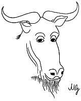

|

|
La licence GNU Free Documentation LicensePour permettre et encourager leur utilisation et leur modification, tous les documents de ce site sont protégés par la GNU Free Documentation License (FDL) (le gnou philosophe est son logo). Cette licence est disponible à l'adresse : http://www.gnu.org/licenses/licenses.html#FDL. Un traduction non officielle est également disponible à l'adresse : http://cesarx.free.fr/gfdlf.html. |